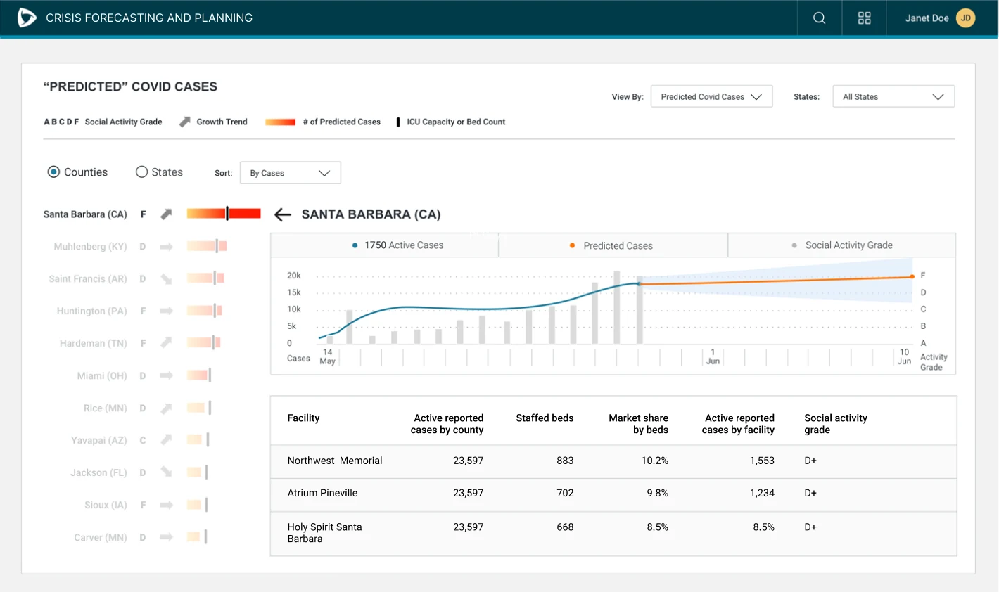
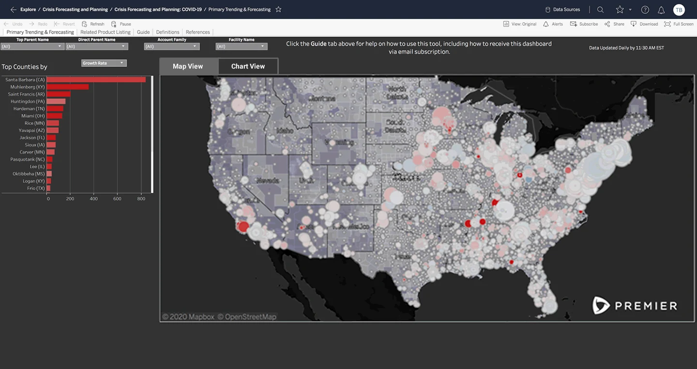
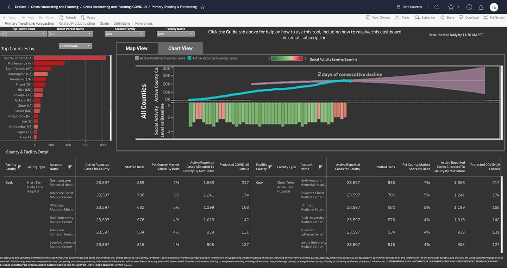
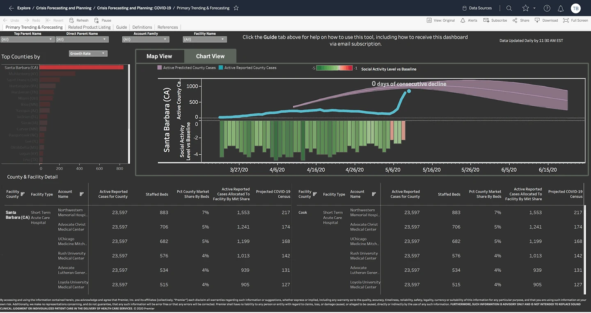

Premier · Crisis Response
Designing a crisis forecasting MVP under uncertainty.
During the early COVID-19 crisis, the team needed an early-warning product before the audience, data model, and requirements had stabilized. I led UX decisions for a focused MVP, balancing speed, evolving evidence, and the needs of three different user groups.

Impact & results
MVP
Shipped despite evolving requirements
3
Distinct audiences
Public health authorities, hospital administrators and frontline clinicians, served by one forecast
Weeks
Compressed discovery-to-delivery cycle
At a glance
The problem
Early in COVID-19, Premier needed an outbreak early-warning product before its users, data model or requirements had been settled.
My role
Principal UX Designer. Partnered with Premier Supply Chain Management, data science and engineering, with weekly and sometimes daily reviews as the model changed.
Key decision
Design one forecast for three audiences at different levels of detail, skip lo-fi, and treat every high-fidelity build as a hypothesis reviewed with data science.
Outcome
An MVP shipped in weeks on Premier's existing BI reporting platform, and the way of working was reused on later crisis-response efforts.
Design challenge
How might we warn health authorities, hospitals and clinicians where outbreaks will emerge next, when the users, the data and the format of a forecast are all still forming?
01 · Situation
A crisis product with no brief to design from
Premier's Crisis Forecasting and Planning tool used the company's national database to track COVID-19 symptoms nationally and predict where outbreaks would emerge next, so resources could reach frontline healthcare workers before a crisis peaked.
Almost nothing about the problem was settled when design work started: not the users, not the data, not the format an "outbreak forecast" should even take.
The team couldn't wait for those answers. Every week without a forecast was a week hospitals and health authorities spent reacting to outbreaks instead of preparing for them.
Three kinds of ambiguity, all unresolved at the same time
No precedent
There was no existing outbreak-forecasting product for individual hospital systems to adapt: no established layout, no interaction pattern, no prior version to critique. Every screen was a first draft of a category that didn't exist yet.
A moving data model
The forecasting model was being built in parallel with the interface. Predictions, and how confident the model was in them, changed week to week, so the UI had to represent uncertainty that was itself still in motion.
An undefined audience
State and regional health authorities, hospital administrators, and frontline clinicians all needed the same underlying data, but for different decisions, at different levels of detail, and nobody had yet decided who the tool served first.
“We don't fully know what the model is going to tell us yet. Design something we can be wrong about, and change every week.”
Supply Chain Executive, week one
02 · Task
Lead UX decisions before the questions had answers
As Principal UX Designer, I was responsible for turning an unformed idea into a usable early-warning product, fast enough to matter during the crisis. That meant:
- Deciding who the forecast served before stakeholders had formally scoped any audience.
- Representing predictions, and the model's confidence in them, while both were still changing.
- Replacing the usual validation steps with something that fit a timeline measured in weeks.
- Getting a working, data-connected product in front of users, even if it wasn't the ideal one.
- Keeping the design easy to revise as guidance and the model shifted.
The absence of a brief wasn't a reason to wait for one. I treated it as a design constraint in its own right.
03 · Action
From designing inside the uncertainty to shipping the current best answer
1. Designed one forecast for three audiences, at different altitudes
Rather than wait for stakeholders to settle on a single primary user, I worked from the assumption that all three groups would need the same underlying forecast, just at different levels of detail. That assumption became the organizing principle for the interface, and it held up as the project matured.
State / regional
Public health authority
Needed to see where outbreaks were predicted to worsen at a granular enough level to target a response, without shutting down an entire state.
“Show me the ZIP codes, not just the state.”
Facility operations
Hospital administrator
Needed enough lead time in a predicted spike to convert capacity, order PPE and drugs, and staff up before the surge arrived, not after.
“Tell me early enough that I can actually do something about it.”
Patient care
Frontline clinician
Needed a read on which patients were most likely to need hospitalization or the ICU, so at-risk patients could be watched more closely.
“I don't need the national picture; I need this patient.”
2. Inverted the design process, deliberately
A standard discovery → wireframe → usability test → hi-fi cycle assumes time to validate assumptions before committing to them. That time didn't exist.
So the process inverted: go straight to high fidelity, treat each version as a hypothesis rather than a spec, and rely on tight, direct loops with the data science team to catch what testing normally would.
The reframe
Wait for a brief
Design something we can be wrong about
The working loop
01
Frame the unknowns
Name what wasn't settled instead of waiting on it.
02
Build hi-fi directly
Skip lo-fi; there was no time to validate twice.
03
Review with data science
Weekly, sometimes daily, as the model changed.
04
Ship the current best answer
Not the final one; the current one.
05
Reopen as guidance shifts
Treat “done” as provisional.
3. Designed the first pass at production fidelity
These are the actual first high-fidelity mockups, not wireframes. With no time for a lo-fi round, the national heatmap and the county-level drill-down were designed directly at production fidelity, then argued over and revised in place.
First hi-fi pass
No lo-fi wireframes

First hi-fi pass
No lo-fi wireframes
What actually shipped
4. Shipped the MVP on the existing BI reporting platform
The ambiguity didn't stop at users and data; it extended to how the thing got built. With no time to spec and staff a custom application, engineering shipped the first release on top of the team's existing BI reporting platform instead.
It meant giving up bespoke interaction design in exchange for a working, data-connected product in weeks. The custom hi-fi direction became the target; this MVP was the fastest path to something real in front of users.
Map view
County-level markers sized and colored by predicted case growth, built on the platform's stock geo-mapping layer rather than a custom map.

All counties view
A ranked growth-rate list plus a predicted-vs-reported case trend with a confidence band: the reporting platform's native chart and filter controls, repurposed for outbreak tracking.

County drill-down
Selecting a county filters the trend chart and the facility table below it: the same drill-down logic from the hi-fi concept, rebuilt in off-the-shelf report filters.

The trade-off
Custom target vs. shipped MVP
| Dimension | Hi-fi concept | Shipped MVP |
|---|---|---|
| Build | Custom application | Existing BI reporting platform |
| Map | Custom county heatmap | Stock geo-mapping layer |
| Drill-down | Bespoke interaction design | Same logic, off-the-shelf report filters |
| Role | The target | The fastest path to something real |
04 · Result
The ambiguity didn't resolve before launch; the tool shipped anyway
A working, data-connected MVP reached users in weeks, serving all three audiences from one forecast.
Targeted response over blunt shutdowns
Instead of shutting down a whole state, authorities could marshal resources to the specific ZIP codes where the model predicted conditions would worsen.
Lead time for hospitals
Facilities could convert part of a hospital to a COVID-specific ward and order PPE, drugs and equipment ahead of a predicted spike, instead of reacting to one already underway.
Earlier clinical risk signals
Clinicians could better judge the risk that a patient would need hospitalization or the ICU, and watch at-risk patients more closely.
A repeatable way to work under uncertainty
The project became a working template for designing when the brief, the data and the users are all still forming, one Premier reused on later crisis-response efforts.
What I'd do next
Closing the gaps the timeline left open
Move toward the custom direction
Evolve the BI-platform MVP toward the custom high-fidelity direction that became the target.
Test with all three audiences
Run the usability testing with health authorities, administrators and clinicians that the timeline didn't allow.